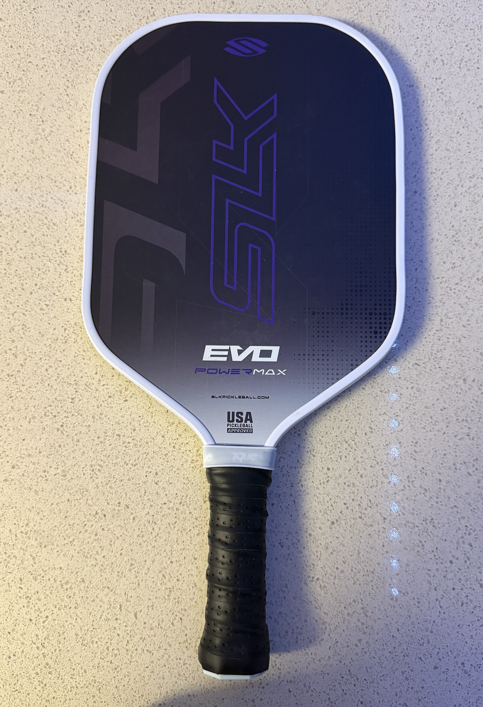

Pickleball Pictorial
Here are the grouped images to show two sides of pickleball. One group focuses on equipment and visual details, while the other focuses on the social and public side of actually playing. I am still currently working on collecting some of the images and captions and organizing them properly to fit and look good so I will be working on that this week as we continue to onto the next stage of the project.
Group One: Gear and Equipment
These images are grouped together because they focus on the objects that define the sport visually. Paddles, balls, nets, and gear bags are often the first things people notice about pickleball, so this group supports the review page by connecting the sport to its equipment.
Images in group: 6
Main focus: paddles, balls, and court equipment
Main idea: the gear shapes how the sport looks and feels



Group Two: Friends, Courts, and Play
These images are grouped together because they focus on the social side of pickleball. Instead of objects, this group highlights people, movement, and shared court spaces. It connects with the second review by showing why pickleball works so well as a group activity.
Images in group: 6
Main focus: play, community, and court culture
Main idea: pickleball is social as much as it is athletic